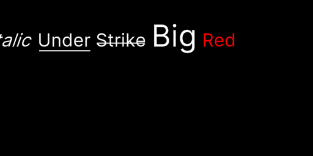

Signed-distance-field text for Godot 4.7
Typesetter gives Godot TextMesh Pro's feature set: rich text, outlines, underlays, glow, bevels, sprites, text that flows between boxes, and per-character animation. Every class and member follows TextMesh Pro's API under a new name, so what you already know carries over.
The text above is drawn from an atlas Typesetter generated, with the same distance formula as its shaders. Each slider changes one uniform, with no new atlas and no new mesh.
The real thing, running in your browser
This is Typesetter's demo scene exported from Godot 4.7 for the web. Every piece of text in it is a Typesetter node, drawn with the same shaders as on desktop.
The demo downloads about 40 MB, and the controls need a mouse or touch.
The same API under new names
| TextMesh Pro | Typesetter |
|---|---|
TextMeshProUGUI | TypesetterLabel |
TextMeshPro | TypesetterText3D |
TMP_FontAsset | TypesetterFontAsset |
TMP_InputField | TypesetterInputField |
text.SetText("{0:2}", score) | text.set_text("{0:2}", score) |
text.textInfo.characterInfo[i] | text.text_info.character_info[i] |
text.GetPreferredValues() | text.get_preferred_values() |
Checked against Unity's own output
A Unity batchmode project drives TextMesh Pro through its public API and records glyph positions, line breaks, sizes, atlases and renders. Typesetter is compared with those recordings on every commit, using the same open-licensed fonts on both sides.

- 198 of 206 layout cases match to 0.02 units. The other 8 are listed with their causes in the parity notes.
- 0.05 to 0.90 of 255 mean atlas difference, depending on the render mode.
- 0.075 of 255 median rendered pixel difference over 227 cases. Glow and bevel are fitted approximations and differ more.
Install
- Copy
addons/typesetterinto your project. Build the native library withpython native/build.py, or take it from the CI artifacts. - Enable Typesetter under Project Settings, Plugins.
- Open Project, Tools, Typesetter: Font Asset Creator, generate an atlas, and add a
TypesetterLabelto a scene.
Windows, Linux, macOS and the web are supported. Web builds use the single-threaded library (python native/build.py --web).
Provenance
Typesetter is a clean-room implementation created by Claude Opus 5.5 (Anthropic), written from Unity's public documentation, published papers and black-box measurements. No TextMesh Pro source was read, and no Unity shaders, fonts or sprites are included. It isn't affiliated with or endorsed by Unity Technologies. TextMesh Pro and Unity are trademarks of their owners. Typesetter is MIT licensed.